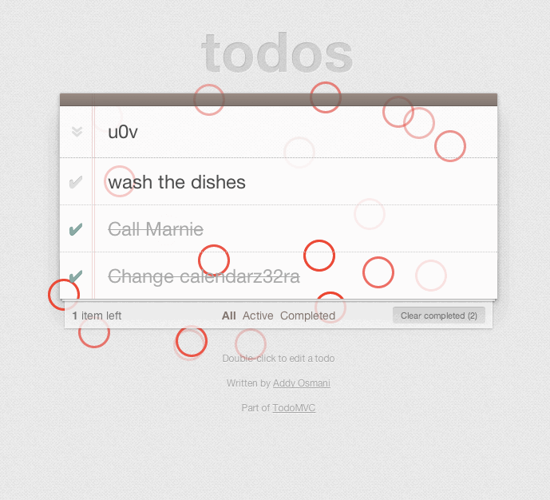
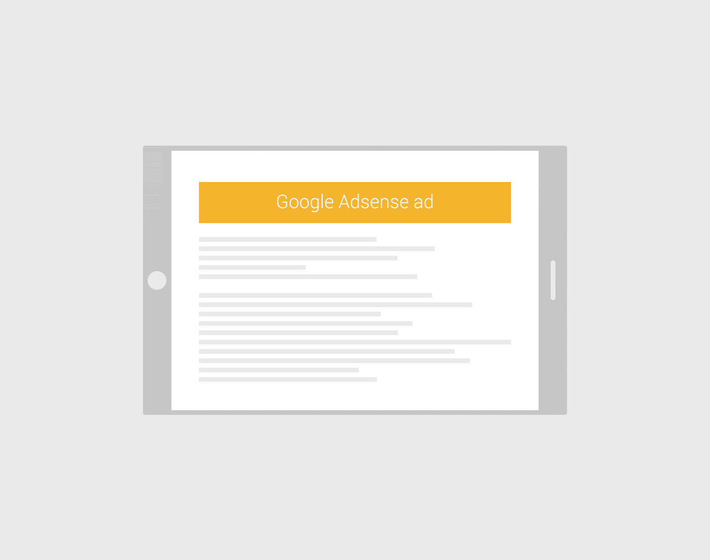
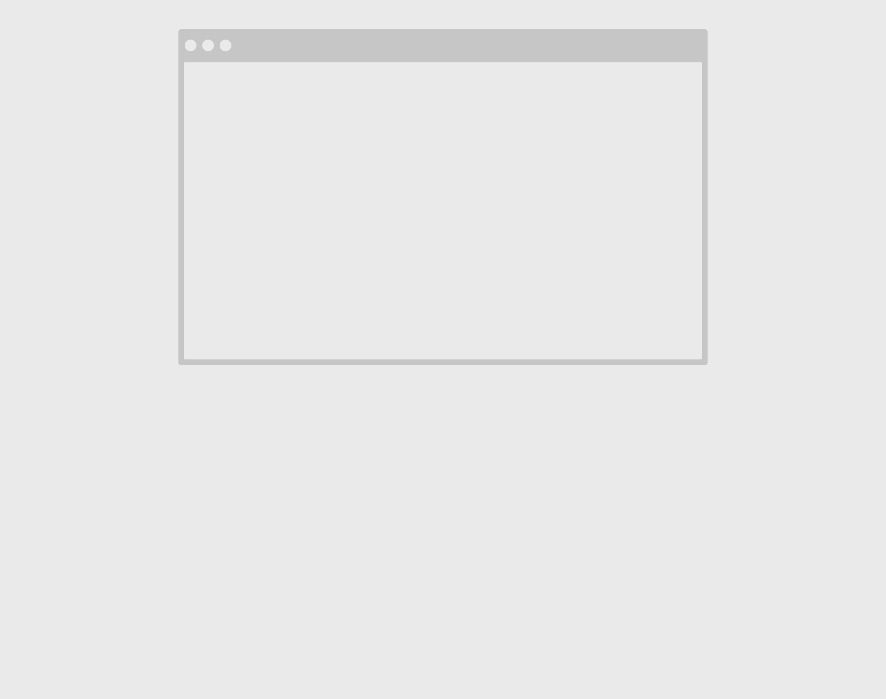
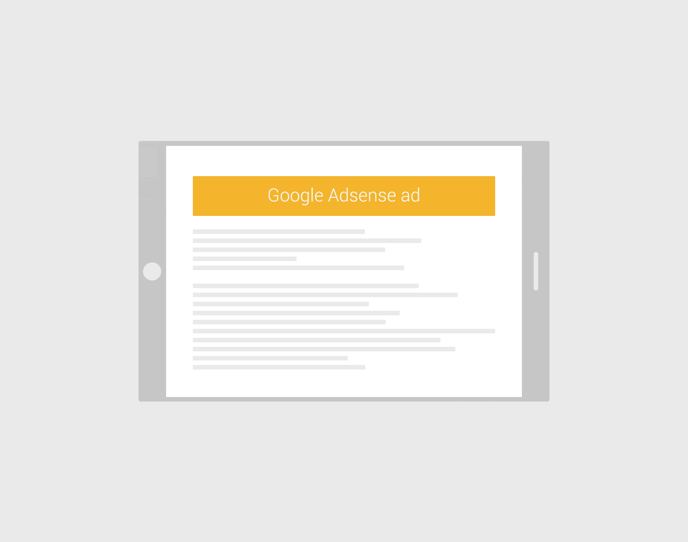

An Intro to Monkey Testing with Gremlins.js
之前我一直不知道为啥有很多测试脚本里面都有monkey字样,本文为我解了惑:
文章主要介绍了混乱测试在Web领域的发展，举例gremlins.js12345// 使用方法// 将gremlins.js引入gremlins .createHorde() //模拟一堆gremlins .unleash() //释放他们
如下,gremlins.js会默认测试五个行为:
1.formFillerGremlin
2.clickerGremlin
3.toucherGremlin
4.scrollerGremlin
5.typerGremlin
同时还会在控制台生成测试记录

我们还可以自定义Gremlins的行为，编号测试以确定bug修复
The Power of the rgba() Color Function in CSS
关于rgba()的一些应用
You, Me And The Emoji: Character Sets, Encoding And Emoji
关于emoji在web中的应用与发展
Lazy Loading Responsive Adsense Ads
google广告存在的两种问题:1.没有懒加载;2.没有自适应

作者希望广告可以达到的效果:


The Best Way to Create Fantastic ‘Invisible Pen’ Effects in SVG
用SVG实现隐形笔刷特效，很有意思，待看